Symmetry is fundamental to understanding physical systems and can improve performance and sample efficiency in machine learning. Both pursuits require knowledge of the underlying symmetries in data, yet discovering these symmetries automatically is challenging. We propose LieFlow, a novel framework that reframes symmetry discovery as a distribution learning problem on Lie groups. Instead of searching for the symmetry generators, our approach operates directly in group space, modeling a symmetry distribution over a large hypothesis group $G$. The support of the learned distribution reveals the underlying symmetry group $H \subseteq G$. Unlike previous works, LieFlow can discover both continuous and discrete symmetries within a unified framework, without assuming a fixed Lie algebra basis or a specific distribution over the group elements. Experiments on synthetic 2D and 3D point clouds, ModelNet10, and a real-world MI-Motion dataset show that LieFlow accurately discovers continuous and discrete subgroups, significantly outperforming a state-of-the-art baseline, LieGAN, in identifying discrete symmetries.
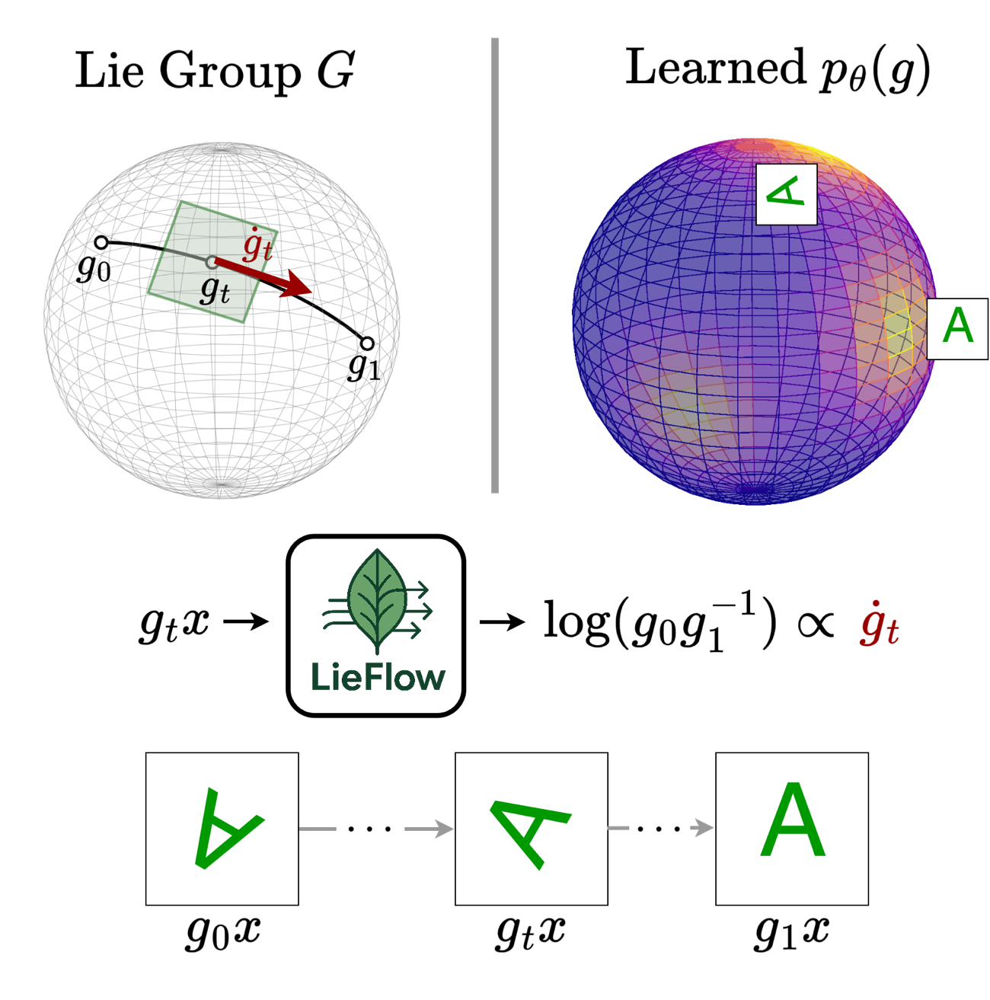
Goal. Discover unknown symmetries of a dataset automatically.
Key idea. Learn a probability distribution over a hypothesis Lie group $G$ by flow matching directly on the group, with a power-law time schedule to capture higher-dimensional groups. The support of the learned distribution reveals the true symmetry subgroup $H \subseteq G$.
Takeaway. The LieFlow framework recovers both continuous and discrete symmetries, outperforming baselines such as LieGAN, SGM, and Augerino, especially on discrete groups.
On synthetic 2D point clouds, we evaluate LieFlow with a compact hypothesis group $\mathrm{SO}(2)$ and a non-compact $\mathrm{GL}(2,\mathbb{R})^{+}$ (two priors). The learned angle histograms peak at the four $C_4$ elements, showing that LieFlow recovers the symmetry in every setting and beats LieGAN on Wasserstein-1 (e.g., $0.054$ vs. $1.07$ for $\mathrm{SO}(2)\!\to\!C_4$).
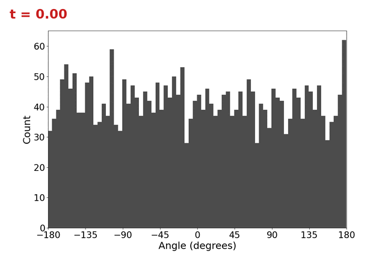
$\mathrm{SO}(2)\to C_4$
$\mathrm{GL}(2)\to C_4$ (Lie algebra)
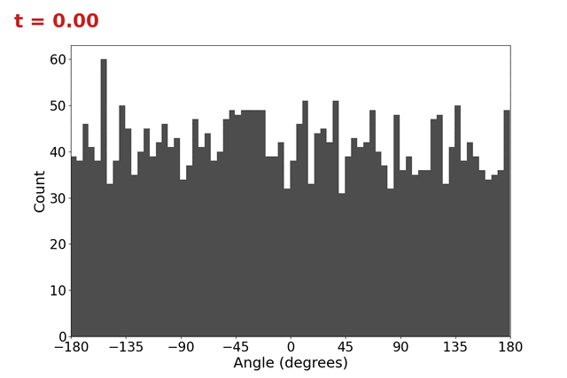
$\mathrm{GL}(2)\to C_4$ (matrix)
On synthetic 3D point clouds, we visualize the learned symmetry distribution by generating $\mathrm{SO}(3)$ elements and plotting their Euler angles on a Mollweide projection (gray-bordered circles are ground truth). The distribution concentrates on the true subgroup as the flow runs, with sharp clusters for discrete groups and a continuous ring for $\mathrm{SO}(2)$. The icosahedral group is also recovered correctly with the proposed power-law time schedule.
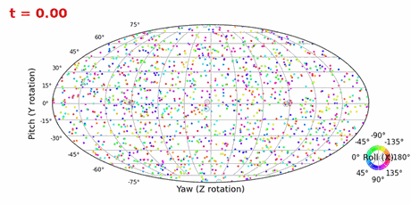
Tetrahedral
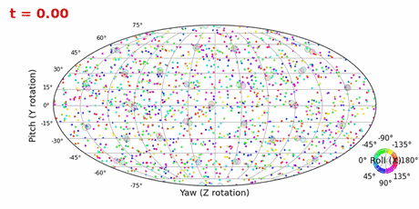
Octahedral
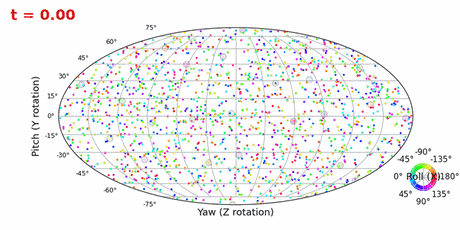
Icosahedral
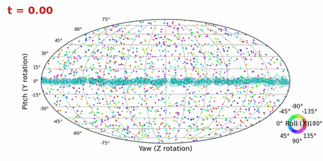
$\mathrm{SO}(2)$, $z$-axis
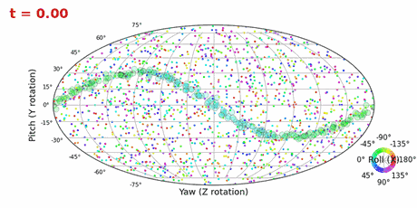
$\mathrm{SO}(2)$, tilted axis
On rotated ModelNet10 objects (real-world shapes), LieFlow achieves the lowest Wasserstein-1 distance $W_1$ on both discrete and continuous groups, beating LieGAN, SGM, and Augerino. Values are $W_1$ with relative improvement over random in parentheses; hypothesis group $\mathrm{SO}(3)$, averaged over 3 seeds; best per column in bold.
| Method | $\mathrm{SO}(3)\to\mathrm{Tet}$ | $\mathrm{SO}(3)\to\mathrm{Oct}$ | $\mathrm{SO}(3)\to\mathrm{SO}(2)$ ($z$) | $\mathrm{SO}(3)\to\mathrm{SO}(2)$ (tilt) | $\mathrm{SO}(3)\to\mathrm{Ico}$ |
|---|---|---|---|---|---|
| LieGAN | 1.113 (-23.5%) | 1.145 (-59.8%) | 0.101 (93.6%) | 0.072 (95.4%) | 0.893 (-72.2%) |
| SGM | 0.915 (-1.5%) | 0.742 (-3.6%) | 1.848 (-17.2%) | 1.832 (-16.2%) | 1.031 (-98.8%) |
| Augerino | 1.059 (-17.5%) | 1.083 (-51.2%) | 1.236 (21.6%) | 1.244 (21.1%) | 0.795 (-53.3%) |
| LieFlow | 0.149 (83.5%) | 0.097 (86.5%) | 0.050 (96.8%) | 0.053 (96.6%) | 0.129 (75.1%) |
We further experiment on real human motion-capture data (people moving in indoor, park, and street scenes) without imposing a target group. LieFlow recovers the approximate $C_4$ symmetry about the vertical axis: the generated $\mathrm{SO}(3)$ elements concentrate on $z$-axis rotations and the angle histogram peaks at $0^\circ, 90^\circ, 180^\circ, 270^\circ$, while LieGAN collapses to a near-uniform distribution.
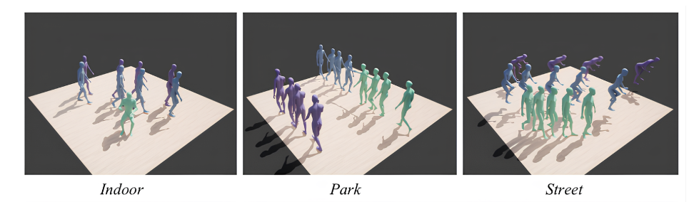
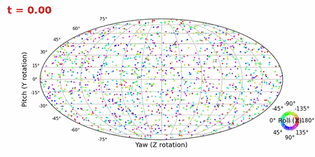
Discovered $\mathrm{SO}(3)$ elements concentrate on $z$-axis rotations.
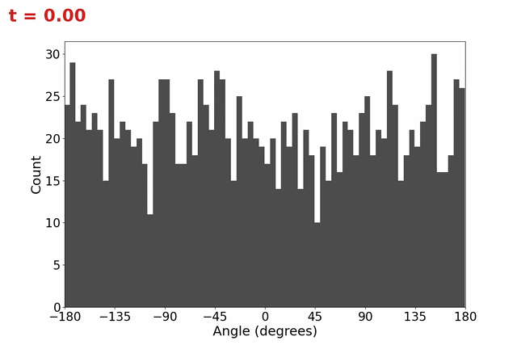
LieFlow (ours)
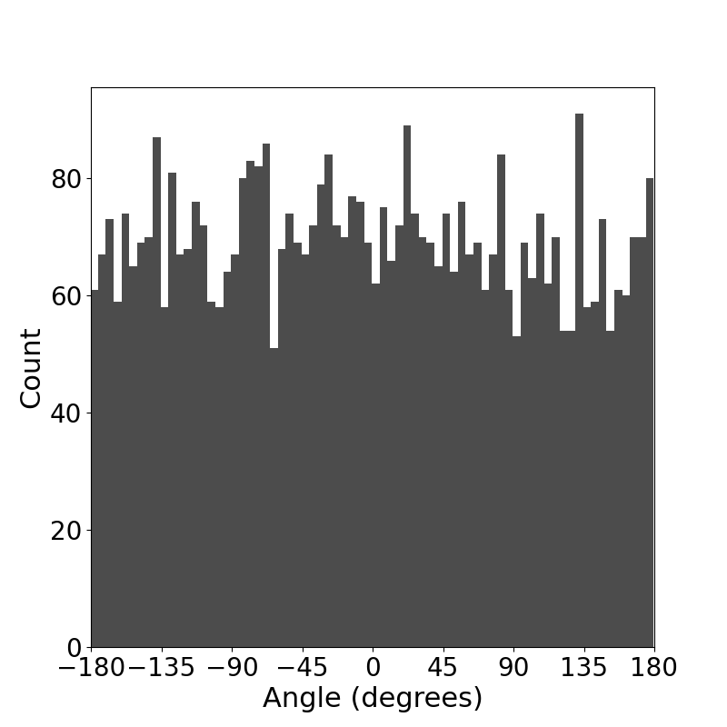
LieGAN
@inproceedings{chen2026lieflow,
title = {Discovering Symmetry Groups with Flow Matching},
author = {Chen, Yuxuan and Park, Jung Yeon and Eijkelboom, Floor and Yang, Jianke and van de Meent, Jan-Willem and Wong, Lawson L.S. and Walters, Robin},
booktitle = {Forty-third International Conference on Machine Learning (ICML)},
year = {2026},
}